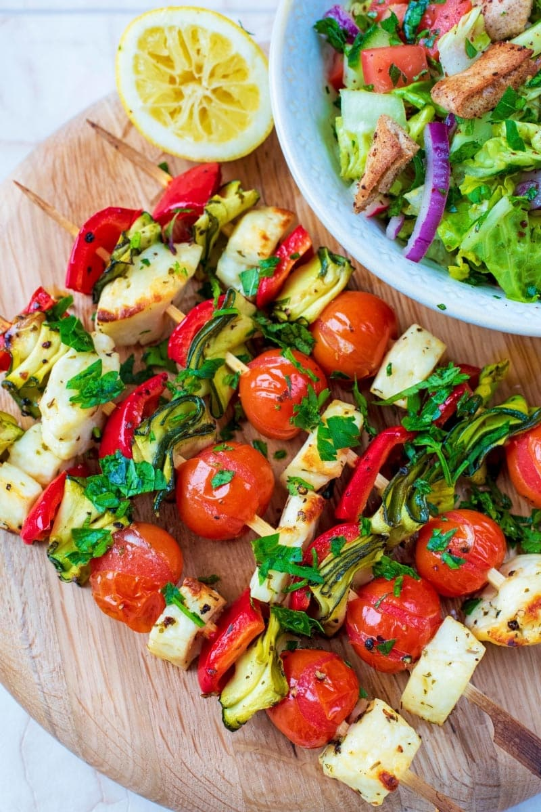

Grilled Veggie Skewers

Description
These marinated fresh veggie kebabs are packed with tons of flavor – perfect as a healthy side dish to any meal. These grilled vegetable kebabs aren’t as much a recipe but a method to master, with simple seasonings to go with anything they’re paired with. Grilling vegetables adds a smoky flavor to each bite. Grilling caramelizes the vegetable’s sweetness by bringing out their natural sugars. If you have a non-veggie liker, try serving them grilled veggies on a skewer, and watch them fall right in line (;
Ingredients
- Halloumi <(This really is the star of the skewers. However, if you didn't have halloumi then you could use paneer instead)
- Bell Pepper
- Cherry tomatoes
- Red onion
- Zucchini
- Squash or pumpkin
For the marinade
- Olive oil
- Red wind vinegar
- Lemon juice
- Oregano / Rosemary / Thyme / Basil
- Garlic
Steps
- Preheat oven to 400 degrees F / 204 degrees Celsius
- Slice the zucchini into ribbons. As ribbons, they look nicer on the skewers, but you can cut them into thick rounds instead. Cut the sqash into thick rounds. Cut the bell pepper and onion into chunks. Keep the cherry tomatoes whole.
- Cut the halloumi into cubes of about 2cm.
- In a small bowl, whisk together the marinate ingredients; season with salt and pepper, to taste.
- Put everything in to a bowl and mix well. Let sit for 10-15 minutes. Or for stronger flavours, marinate the vegetables overnight.
- Thread the now-marinated cut vegetables onto skewers.
- Place skewers onto a baking sheet.
- Place onto oven and roast until tender, about 10-12 minutes.
- Serve immediately.